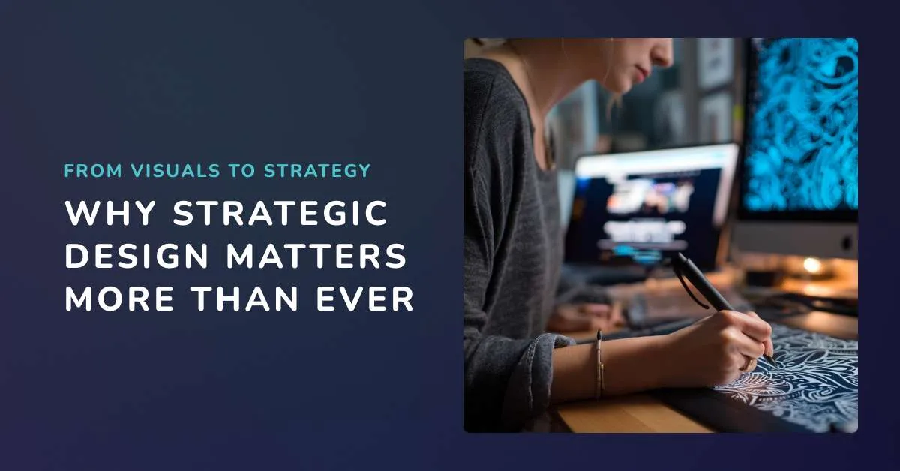

Design
Why Strategic Graphic and Web Design Matters More Than Ever

Gone are the days when graphic designers were only asked to create “something that looks nice.” The design industry has shifted, and businesses now expect more from us. And honestly, I’m here for it.
At Leanne Digital, I bring strategic graphic design and web design into every project. Because design is no longer just about pretty visuals. It is about creating authentic connections that build trust, solve real problems, and inspire action.
What is Strategic Graphic Design?
At its core, strategic design means thinking beyond the surface. It is not just design that looks good, but design that works hard for your business.
Strategic graphic and web design always considers three things:
- The audience: Who are we speaking to, and what do they value?
- The problem: What challenges or needs does the audience have?
- The solution: How can your business or organization meet those needs in a way that feels trustworthy and authentic?
The goal isn’t just to wow people. The goal is to create something useful, genuine, and meaningful.
Good Design vs. Strategic Design

Good Design asks questions like:
- Is the design consistent with the brand’s identity?
- Can people easily understand and navigate it?
- Does it catch the eye and look professional?
Strategic Graphic and Web Design goes further:
- Who is the audience, and what do they care about?
- What problem are they facing that needs solving?
- How can visuals, messaging, and layout guide them toward a solution?
- Does the design build trust and motivate action?
Why Trust Matters
People are cautious, and for good reason. In today’s world, scams and inauthentic marketing are everywhere. Customers want to feel seen, understood, and safe when making a purchase.
When you use design to make people feel directly spoken to, they are far more willing to spend money with you. That trust is everything.
Without it, even the prettiest visuals will not move the needle.
The Problem With “Just Pretty Visuals”

We’re constantly bombarded with ads, templates, and endless “good design” thanks to tools like Canva. Pretty graphics used to stand out. Now they are the default.
Here’s the truth:
- Pretty visuals alone don’t cut through the noise.
- People are craving connection, not decoration.
- Strategic design is what makes a brand memorable.
If you want people to pay attention, your design has to say: “This is for you. We understand you.”
The Process: Designing With Strategy
When I start a design project, I don’t just jump straight into picking colors or fonts. Strategic design is a journey, and it always begins with understanding people.

Step 1: Know Your Audience
Your audience is at the heart of everything. Not just their age or gender, but who they are as people. What do they care about? What kind of vibe are they looking for when they connect with a brand?
When I design, I think about how to appeal to their aspirations. Do they want a brand that feels approachable and community-driven? Or are they looking for something sleek and professional that gives them confidence? The goal is to make them feel like the design was made just for them.
Step 2: Build Brand Alignment and Consistency
Once I know the audience, the next step is making sure your brand shows up in a consistent way across all touchpoints. Your website, social media, and print materials should feel like they belong to the same family.
When your audience sees that consistency, they start to think, “This business always shows up the same way. I know them. I trust them.” That recognition turns into comfort, and comfort turns into loyalty.
Step 3: Set Clear Goals
Design without a purpose is just decoration. That’s why I always ask: what do you need your design to do?
- Do you want more awareness?
- Do you want more leads?
- Do you want more email signups or sales?
Design should guide your audience toward these goals. Maybe it’s through a bold call-to-action, a simplified layout that naturally directs the eye, or a landing page that makes it easy to say “yes.”
Step 4: Let Data Lead the Way
Creativity is essential, but data tells us what actually works. That’s why I look at analytics, research, and SEO insights to guide design choices.
For example, we know that page load speed is more important for SEO than flashy animations. A clean, fast-loading website will outperform a slow, complicated one every time. Data helps us refine the creative work so it not only looks good but also performs.
Step 5: Tell a Story Through Visuals
Finally, this is where everything comes together. Humans are wired for stories, and design is one of the most powerful ways to tell them.
Your customers should feel like they’re the hero of their own story. Your business is the trusted sidekick that helps them succeed.
That’s where visuals come in:
- Colors set the mood.
- Typography creates personality.
- Imagery makes the experience relatable and inspiring.
Together, these elements tell a story that makes your audience feel seen, understood, and connected.
Example: Leanne Digital Rebrand

When I rebranded Leanne Digital, I used strategic design principles to attract the right audience.
My audience: Small businesses and organizations who want personalized support and real human connection. Many have been burned by big agencies and want someone approachable but capable.
My solution:
- Friendly, rounded fonts and a playful logo (to show approachability).
- My name as the brand name (to emphasize human connection).
- Dark blues, purples, and teals (to show professionalism, tech focus, and high-quality design).
The results: After rebranding, my leads doubled because people could see themselves in my brand and trusted me more.
Measuring Success
So how do you know if strategic design is working?
Here are a few signs:
- More inquiries and leads (because people feel confident reaching out).
- Longer customer relationships (because trust turns customers into fans).
- Higher conversion rates (because design is aligned with business goals, not just aesthetics).
My Perspective as a Strategic Designer
What sets me apart is empathy. I’m not just a designer working for businesses, I am right there alongside them.
I understand what it feels like to be a small business owner trying to connect with an audience. That’s why I collaborate closely, listen deeply, and always design from the audience’s perspective.

Final Thoughts
Here’s the biggest truth:
Your business is not a beauty pageant. It is not about being the most popular or the most beautiful.
It is about creating authentic connections with your audience so you attract quality customers who not only buy from you, but also support you, cheer for you, and tell others about you.
If you looking for a Graphic and Web Designer who truely understand your goals for you business feel free to schedule a call with me today!
Work with us
Want design that actually works for the business?
This post is about treating graphic and web design as strategy, not decoration.
If you want help with graphic design or website design that is built around your audience, contact Leanne Digital.
Frequently Asked Questions
What is strategic graphic design?
It is design that starts with who you help, what they need, and what you want them to do next. Looks still matter. They just serve the goal instead of replacing it.
Is a pretty website enough?
No. If visitors cannot tell what you do or why they should trust you, they leave. Strategy is what makes the visuals useful.
How do you measure design success?
By whether people understand the offer, stay on the page, and take action: inquiries, bookings, sales, or the next step you defined.
Do you rebrand existing businesses?
Yes. We have used this process on our own brand and on client work: audience, goals, visual story, then a website that matches.